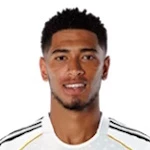
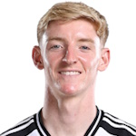

–
dní
Sobota 18. července, výkop ve 23:00 SELČ: poražení semifinalisté se utkají o bronz. Ve hře je i Zlatá kopačka — Mbappé má 8 gólů stejně jako Messi. Kurzy, čísla a náš tip.


Francie padla 0:2 se Španělskem po šesti výhrách v řadě — do té doby v turnaji ani jednou neprohrávala. Anglie sahala po finále až do 85. minuty, pak přišel argentinský obrat během pěti minut. Dva zklamané týmy, jedno místo na stupních — a malé finále, které historicky přeje gólům: nohy jsou těžké, obrany se otvírají a osobní motivace váží víc než taktika.
Implikované pravděpodobnosti očištěné o marži (z kurzů 1X2). Výsledek v 90 minutách. Průměrné orientační kurzy — průběžně se mění.
| Francie | Anglie | |
|---|---|---|
| Výhry | 6 | 5 |
| Remízy | 0 | 1 |
| Porážky | 1 | 1 |
| Góly vstřelené | 16 | 14 |
| Góly obdržené | 4 | 8 |
| Čistá konta | 4 | 2 |
| Forma | WWWWL | WWWWL |
Francie Senegal
Senegal Iraq
Iraq Norvegia
Norvegia Svezia
Svezia Paraguay
Paraguay Marocco Anglie
Marocco Anglie Croazia
Croazia Ghana
Ghana Panama
Panama RD Congo
RD Congo MessicoNorvegia
MessicoNorvegia Argentina Francie
Argentina Francie
 Anglie
Anglie


Kurz 1,87 na Francii proti 3,79 na Anglii: trh vidí jasného favorita. Dává to smysl — kádr je hlubší, Mbappé má osobní cíl a Deschamps nic nevypouští. Malá finále jsou ale zvláštní zápasy: ani jedno z posledních čtyř neskončilo bez gólů. Náš tip: výhra Francie a branky na obou stranách.
Francie · kurz 1,87V sobotu 18. července 2026, výkop ve 23:00 SELČ.
Francie s kurzem 1,87 (asi 51 %); Anglie 3,79, remíza v 90 minutách 3,90.
O bronz a fakticky i o Zlatou kopačku: Mbappé s 8 góly dotahuje souboj s Messim.
Oba týmy prohrály semifinále: Francie 0:2 se Španělskem, Anglie 1:2 s Argentinou.